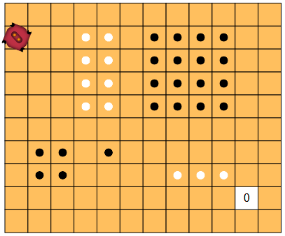
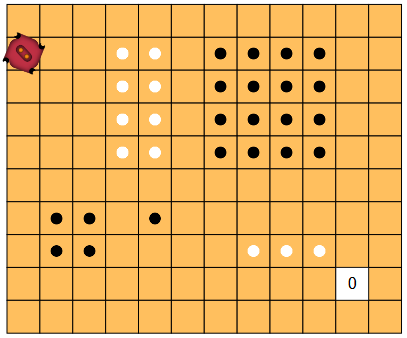
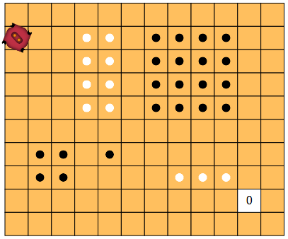

Compter les cases marquées
 

Programmez le robot pour que, sur chaque ligne, il compte les cases marquées avec un point noir. Il doit écrire le résultat sur la case blanche au bout de chaque ligne.
Programmez le robot pour qu'il compte toutes les cases marquées avec un point noir de la grille. Il doit écrire le résultat sur la case blanche en bas à droite.
Notez que cet exercice contient plusieurs tests. Le même programme doit fonctionner sur tous les tests.